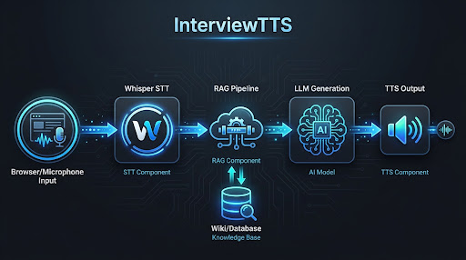
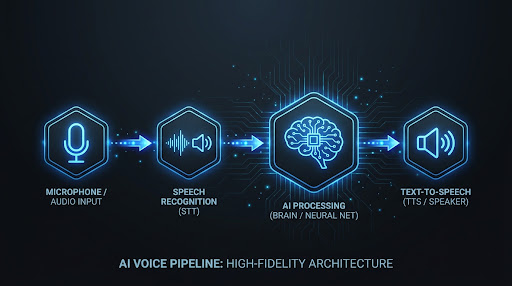

Arquitectura End-to-End
El pipeline completo de voz: del microfono del navegador al audio sintetizado que responde a la pregunta del reclutador.
Vision General

Arquitectura del sistema: Browser → FastAPI → Whisper → RAG+Wiki → LLM → TTS → SSE
El sistema se compone de cinco componentes principales orquestados por un servidor FastAPI. Cada componente tiene una responsabilidad clara y acotada, lo que facilita tanto el desarrollo independiente como la optimizacion de cada etapa del pipeline.
Flujo por Turno
Cada interaccion sigue el mismo patron. Divide la conversacion en turnos, donde cada turno es un ciclo completo de procesamiento:
- Captura de audio: El navegador graba audio del microfono y lo envia como WAV/PCM al servidor.
- STT (Speech-to-Text): Faster-Whisper transcribe el audio a texto en espanol.
- RAG (Retrieval-Augmented Generation): Se busca contexto relevante en la wiki del candidato (~30 documentos Markdown con frontmatter YAML).
- LLM: Un modelo de lenguaje genera una respuesta informada usando el contexto recuperado.
- TTS (Text-to-Speech): Pocket TTS sintetiza la respuesta en audio.
- SSE (Server-Sent Events): El audio se envia de vuelta al navegador, token por token, para reproducirse en tiempo real.
Por que SSE y no WebSockets

Pipeline STT → LLM → TTS con streaming unidireccional
Esta fue una de las decisiones arquitectonicas mas importantes. Los WebSockets permiten comunicacion bidireccional, pero en nuestro caso el flujo es fundamentalmente unidireccional durante la fase de respuesta: el servidor genera tokens y los envia al cliente.
SSE es mas simple, se integra nativamente con HTTP, y funciona detras de proxies y load balancers sin configuracion adicional. Para nuestro caso de uso — streaming de audio generado — es la herramienta correcta.
Ventajas de SSE para nuestro caso:
- Simplicidad: No requiere handshake como WebSockets. Una conexion HTTP simple.
- Compatibilidad: Funciona con proxies HTTP estandar, Nginx, y CDNs sin configuracion especial.
- Auto-reconexion: El navegador reconecta automaticamente si la conexion se cae.
- Direccion unidireccional: El cliente envia la pregunta via POST, el servidor responde via SSE. No necesitamos bidireccionalidad.
Cuando el cliente necesita enviar algo (una nueva pregunta), simplemente hace una nueva peticion POST. Cada turno es independiente.
FastAPI como Orquestador
FastAPI no es solo un framework HTTP aqui — es el orquestador central que coordina todos los componentes. Gracias a su soporte nativo para async/await y StreamingResponse, podemos:
- Recibir audio del navegador como upload
- Ejecutar Whisper STT en un thread pool separado (para no bloquear el event loop)
- Invocar el pipeline RAG para recuperar contexto
- Hacer streaming token-by-token del LLM al TTS
- Enviar el audio resultante via SSE
Todo esto manteniendo la concurrencia y sin bloquear el servidor para otros clientes.
El Rol del Frontend
El navegador no es un simple reproductor. El frontend maneja:
- Grabacion de audio: MediaRecorder API del navegador
- Envio de audio: POST multipart con el audio capturado
- Recepcion SSE: Escucha tokens de audio generados
- Reproduccion: AudioContext para reproducir los chunks de audio
- Avatar audio-reactivo: Un avatar que reacciona a la amplitud del audio